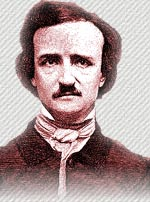

Edgar Allan Poe
Archive Photos
Pioneering works in a new style of fiction—the detective story and the detective novel.
Four popular authors in this category are: Wilkie Collins, Charles Dickens, Arthur Conan Doyle, and Edgar Allan Poe. Can you ferret out which author goes with which title? Click on the book title to solve the mystery.